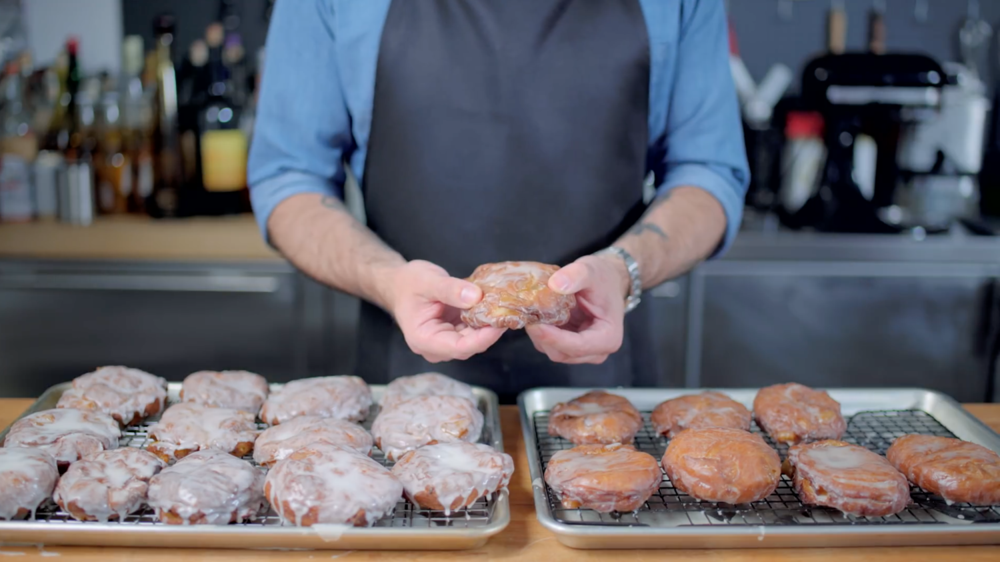

Double Glazed Apple Fritters

Boy howdy kiddos! Do you remember season 3 episode 38 of the
Regular Show first airing August 27, 2012? Of course you do!
Then no doubt you remember the dangerous and delicious Double
Glazed Apple Fritters. For too long these 'nOt SaFe FoR
hUmAn CoNsUmPtIoN' (BS) treats have been more like 'not
available for human consumption'.
However, after 7 long years, Andrew Rea from the YouTube channel
Binging with Babish has ended our collective suffering
with his wonderful version of this Cartoon Network pastry.
For this recipe you will need:
Dough
- 1 ¾ cup milk (heated to 110°F)
- 2 ¼ tsp active dry yeast
- ¼ cup sugar
- 2 Tbsp honey
- 3 eggs
- 22 ⅓ ounces all purpose flour
- 1 ½ sticks unsalted butter (room temperature)
- 1 ½ quarts vegetable oil
Apple Filling
- 4 large Granny Smith apples
- 1 lemon
- ½ stick of unsalted butter
- ½ cup brown sugar
- ¼ tsp cloves
- ½ tsp ground ginger
- 1 tsp cinnamon
- ¼ tsp allspice
- 1 tsp cornstarch
Glaze
- 2 ½ cups powdered sugar (or more, if you want an extra thick glaze)
- ¼ cup milk
Recipe
- To make the doughnuts, whisk warmed milk, yest, sugar,
and honey for 10 minutes. To this add flour, eggs, and
cubed butter.
- Using a stand mixer, stir for 7-8 minutes, occationally scraping
down the bowel's sides.
- Allow the dough to rise for 1 hour.
- During this time, chop your apples and coat the large chunks in
lemon juice.
- In a large pan, heat the butter on medium heat until lightly
browned. At this point add the apple pieces and brown sugar.
- Add cloves, ginger, cinnamon and allspice and stir for 4-5 minutes
- Separately mix water and cornstarch, then add to the pan, letting it
sit once stirred.
- Empty your risen dough on a well floured surface and spread into a
large rectangle.
- Spread the cooled applie filling evenly across the dough
- Fold the dough into thirds, manipulate into a new bowl, and let rise for
1 hour.
- Again empty the dough onto a floured work surface and flatten to 1 in
thickness. Cut out individual fritters, re-rolling, flattening, and cutting
until all the dough is used.
- Fry the dough in 375°F for 90 seconds on each side (180 sec total), and
let cool on a wire rack.
- Combine a lot of powdered sugar (about 2 ½ cups) and a little bit of milk
(about ¼ cup) and whisk until smooth.
- Dunk each fritter into the glaze and let rest back on the rack. Once the first
coat has hardened, go in and dunk each fritter again for a double glaze.
- If you want to make a thicker glaze, double the amount of powdered sugar and
use the same amount of milk for an extra thick honey bun-esque glaze.
To see Andrew's full video, click the link